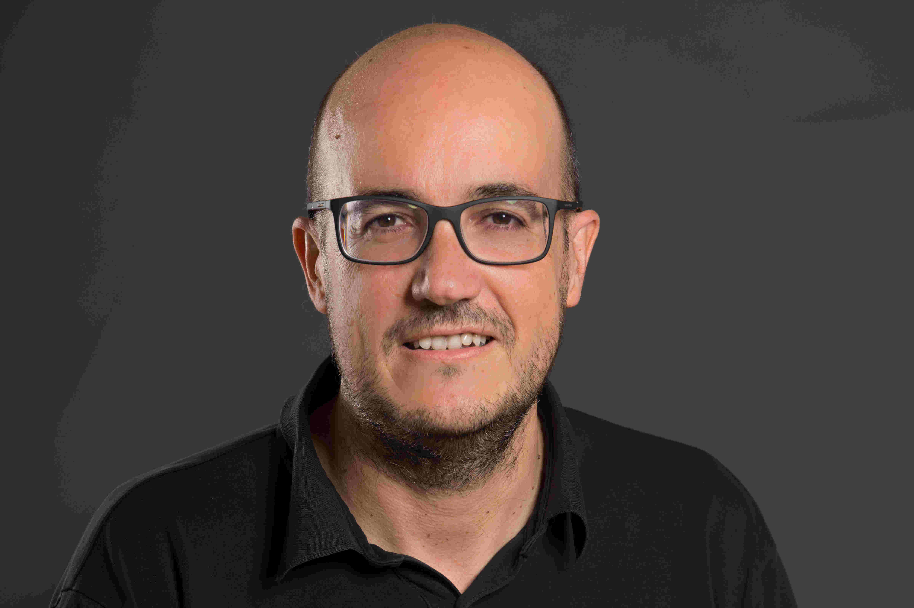
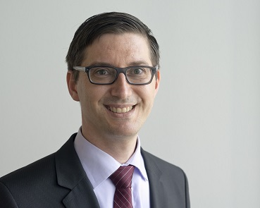
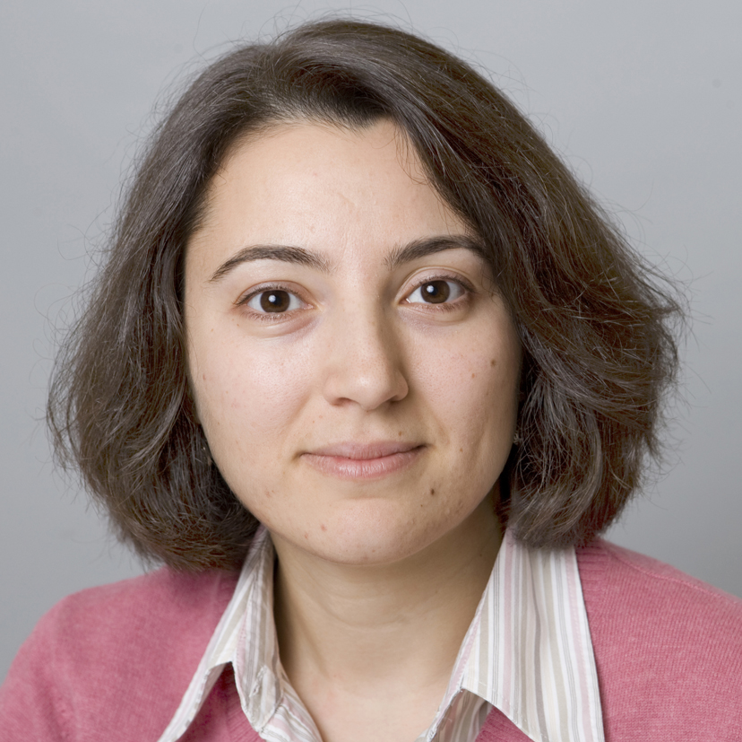
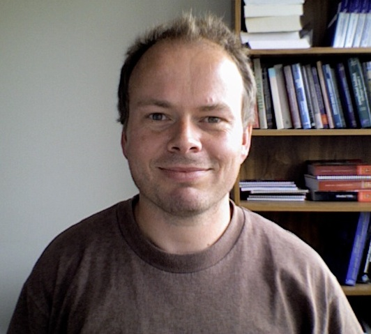

We are pleased to announce some of the keynote speakers confirmed for DEBS'18.
Abstract: Big Data and the Internet of Things (IoT) have the potential to fundamentally shift the way we interact with our surroundings. The challenge of deriving insights from the Internet of Things (IoT) has been recognized as one of the most exciting and key opportunities for both academia and industry. Advanced analysis of big data streams from sensors and devices is bound to become a key area of data mining research as the number of applications requiring such processing increases. Dealing with the evolution over time of such data streams, i.e., with concepts that drift or change completely, is one of the core issues in stream mining. In this talk, I will present an overview of data stream mining, and I will introduce some popular open source tools for data stream mining. 
Biography: Albert Bifet is a Full Professor and Head of the Data, Intelligence and Graphs (DIG) Group at Télécom ParisTech and Honorary Research Associate at the WEKA Machine Learning Group at University of Waikato. Previously he worked at Huawei Noah's Ark Lab in Hong Kong, Yahoo Labs in Barcelona, University of Waikato and UPC BarcelonaTech. He is the author of a book on Adaptive Stream Mining and Pattern Learning and Mining from Evolving Data Streams. He is one of the leaders of MOA and Apache SAMOA software environments for implementing algorithms and running experiments for online learning from evolving data streams. He was serving as Co-Chair of the Industrial track of IEEE MDM 2016, ECML PKDD 2015, and as Co-Chair of BigMine (2015, 2014, 2013, 2012), and ACM SAC Data Streams Track (2017, 2016, 2015, 2014, 2013, 2012).
Find out more about the ACM Distinguished Speakers Programme visit the ACM
Abstract: The global database research community has greatly impacted the functionality and performance of data storage and processing systems along the dimensions that define “big data”, i.e., volume, velocity, variety, and veracity. Locally, over the past five years, we have also been working on varying fronts. Among our contributions are: (1) establishing a vision for a database-inspired big data analytics system, which unifies the best of database and distributed systems technologies, and augments it with concepts drawn from compilers (e.g., iterations) and data stream processing, as well as (2) forming a community of researchers and institutions to create the Stratosphere platform to realize our vision. One major result from these activities was Apache Flink, an open-source big data analytics platform and its thriving global community of developers and production users. Although much progress has been made, when looking at the overall big data stack, a major challenge for database research community still remains. That is, how to maintain the ease-of-use despite the increasing heterogeneity and complexity of data analytics, involving specialized engines for various aspects of an end-to-end data analytics pipeline, including, among others, graph-based, linear algebra-based, and relational-based algorithms, and the underlying, increasingly heterogeneous hardware and computing infrastructure. At TU Berlin, DFKI, and the Berlin Big Data Center (BBDC), we aim to advance research in this field via the Mosaics project. Our goal is to remedy some of the heterogeneity challenges that hamper developer productivity and limit the use of data science technologies to just the privileged few, who are coveted experts.
 Biography: Volker Markl is a Full Professor and Chair of the Database Systems and Information Management (DIMA) Group at the Technische Universität (TU) Berlin, Director of the Intelligent Analytics for Massive Data Research Group at the German Research Center for Artificial Intelligence (DFKI), and Director of the Berlin Big Data Center (BBDC). He has published numerous research papers on indexing, query optimization, lightweight information integration, and scalable data processing. He holds 19 patents, has transferred technology into several commercial products, and advises several companies and startups. He has been Speaker and Principal Investigator of the DFG funded Stratosphere research project that resulted in the Apache Flink Big Data Analytics System. Currently, he serves as the Secretary of the VLDB Endowment and was elected as one of Germany's leading Digital Minds (Digitale Köpfe) by the German Informatics (GI) Society. Most recently, Volker and his team earned an ACM SIGMOD Research Highlight Award 2016 for their work on “Implicit Parallelism Through Deep Language Embedding.”
Abstract: Stream processing has been an area of ongoing research since the early 2000s. Fueled by industry’s growing interest in dealing with high-velocity big data in near real-time settings, there has been a resurgence of recent activity in both research and engineering of large-scale stream processing systems. In this talk, we will examine the state of the art, focusing in particular on key trends of the past five years with an outlook towards the next five years. I will also give examples from our own work, including stream processing in transactional settings as well as predictive time series analytics for the Internet of Things. Transactional stream processing broadly refers to processing streaming data with correctness guarantees. These guarantees include not only properties that are intrinsic to stream processing (e.g., order, exactly-once semantics), but also ACID properties of traditional OLTP-oriented databases, which arise in streaming applications with shared mutable state. In our recent work, we have designed and built the S-Store System, a scalable main-memory system that supports hybrid OLTP+streaming workloads with strict correctness needs. A use case that best exemplifies the strengths of S-Store is real-time data ingestion. Thus, I will also discuss the requirements of modern data ingestion and how to meet them using S-Store, especially within the context of our BigDAWG Polystore System. The Internet of Things (IoT) envisions a world made up of huge numbers of sensors and computing devices that interact in intelligent ways (e.g., self-driving cars, industrial automation, mobile phone tracking). The sensors produce massive amounts of data and the computing devices must figure out how to use it. The preponderance of this data is time series. Anomaly detection, i.e., the process of finding patterns that do not conform to expected behavior, over time series is an important capability in IoT with multiple potential applications. Through anomaly detection, we can identify unusual environmental situations that need human attention, distinguish outliers in sensor data cleaning, or pre-filter uninteresting portions of data to preserve computing resources, to name a few. In our new Greenhouse Project, we have been exploring “zero-positive” 1 machine learning (ML) techniques for efficient and accurate prediction of anomalous patterns over high volumes of time series data. This also includes the design of a new accuracy model for evaluating range-based anomaly detection algorithms more effectively. I will share some of our early results from this project, and then conclude the talk with a discussion of future research directions.
 Biography: Nesime Tatbul is a senior research scientist at the Intel Science and Technology Center for Big Data based at MIT CSAIL. Before joining Intel Labs, she was a faculty member at the Computer Science Department of ETH Zurich. She received her B.S. and M.S. degrees in Computer Engineering from the Middle East Technical University (METU), and her M.S. and Ph.D. degrees in Computer Science from Brown University. Her research interests are in database systems, with particular focus on data stream processing and large-scale data management. She is the recipient of an IBM Faculty Award in 2008, a Best System Demonstration Award at the ACM SIGMOD 2005 Conference, and both the Best Poster Award and the Grand Challenge Award at the ACM DEBS 2011 Conference. She has served on the program committee for various conferences including ACM SIGMOD (as an industrial program co-chair in 2014 and as a group leader in 2011), VLDB, and IEEE ICDE (as a PC track chair for Streams, Sensor Networks, and Complex Event Processing in 2013). Her recent editorial duties include PVLDB (associate editor, Volume 5, 2011-2012) and ACM SIGMOD Record (associate editor, Research Surveys Column, 2012-2017).
Biography: Subhrajit received the B.Eng. and Ph.D. degrees in Electronics and Telecommunication Engineering from Jadavpur University, India and Electrical and Electronic Engineering from Nanyang Technological University, Singapore respectively. He has been a researcher in the field of Artificial Intelligence for the past 5.5 years. During his doctoral studies, he developed supervised and unsupervised machine learning algorithms for custom neuromorphic hardware. He designed several novel neural network architectures and published first-author papers in leading AI journals such as IEEE Transactions on Neural Network and Learning Systems, IEEE Transactions on Biomedical Circuits and Systems, and MIT Press' Neural Computation. After completing his Ph.D., he joined IBM Research, Australia where he focuses on developing deep learning algorithms for the prediction, detection, and management of epileptic seizures. He co-developed an ultra-low power, tunable, automatic, neuromorphic system for seizure prediction and published a co-first author paper in The Lancet's EBioMedicine. Until now, he has authored or co-authored 11 journal papers and 18 conference papers and filed 4 patents in AI. He acts as a regular reviewer for IEEE Transactions on Neural Network and Learning Systems, Frontiers in Neuroscience, IEEE Transactions on Systems, Man and Cybernetics Part C, IEEE Journal on Emerging and Selected Topics in Circuits and Systems, and Swarm and Evolutionary Computation. He is the recipient of fellowships from Convergent Science Network of Biomimetic and Biohybrid Systems (CSN) and Heidelberg Laureate Forum. His work was featured in IEEE Spectrum, The World Economic Forum, ZDNet, The Australian, Digital Trends, Medical Xpress, Futurity, IFLScience, Technology Breaking News, The Australian Hospital Healthcare Bulletin, and Radio Perth amongst others.
 Abstract: This invited talk will provide an overview of the WEKA project, a software development effort at Waikato university that has spanned more than 15 years. The project has produced an open-source software workbench for machine learning and data mining that is written in Java and incorporates several graphical user interfaces, a command-line interface, and an API. The talk will focus on some of the more recent additions to the software that have enabled integration of other tools from the software ecosystem for data science: R, Python, and DeepLearning4j, a deep learning library written in Java.